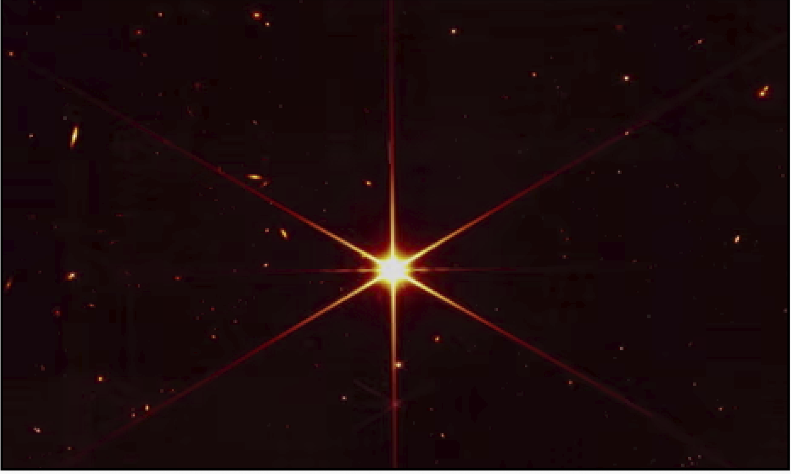
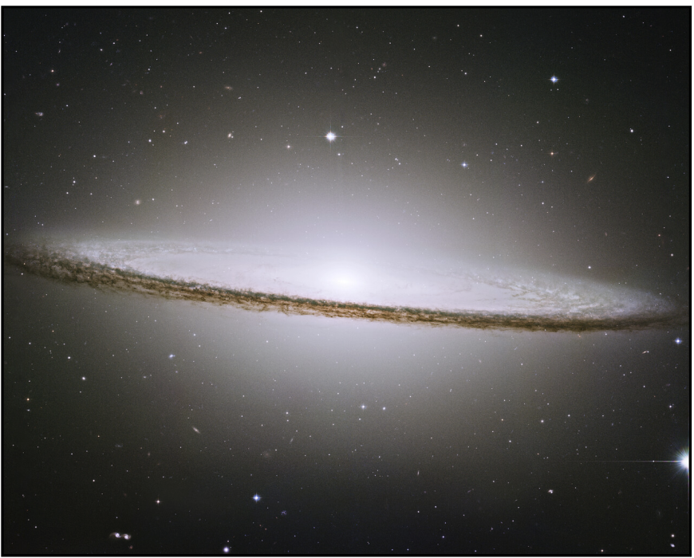
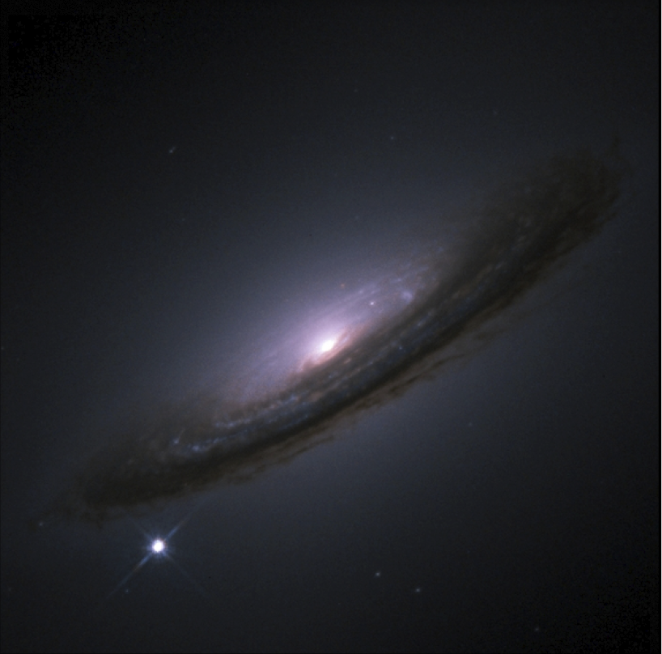

Saved Favourites
APOD images are shown here from local storage. Users can delete any favourite.

Blue Spiral Galaxy

APOD images are shown here from local storage. Users can delete any favourite.


